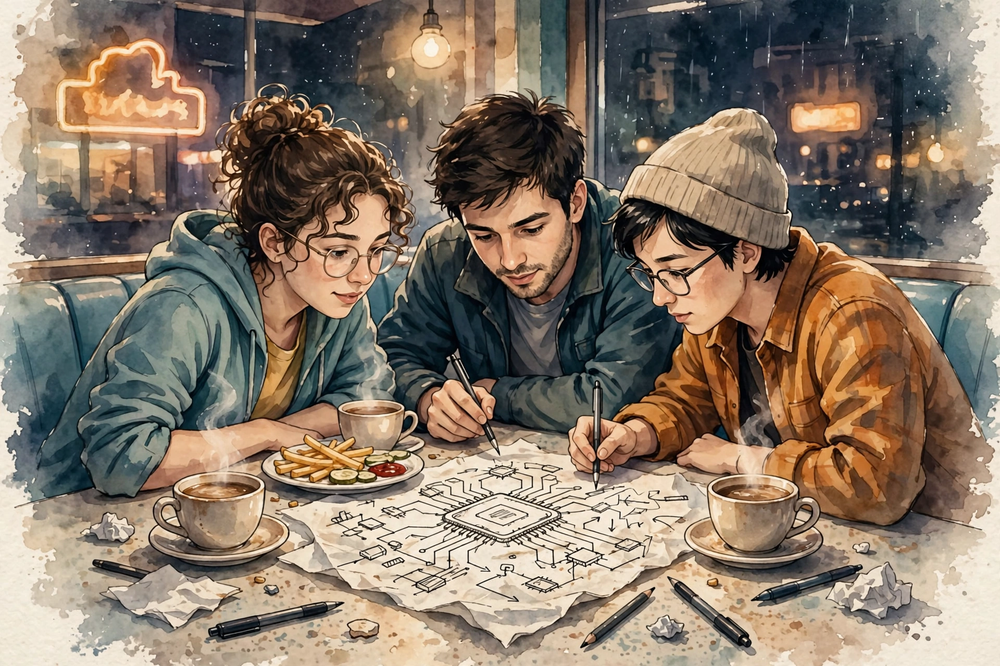
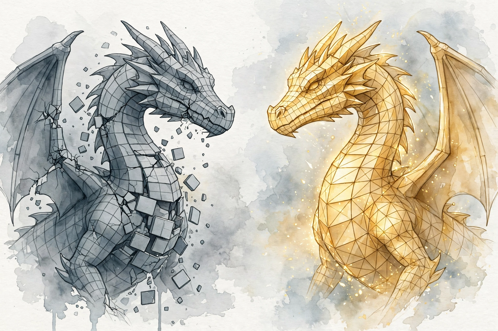
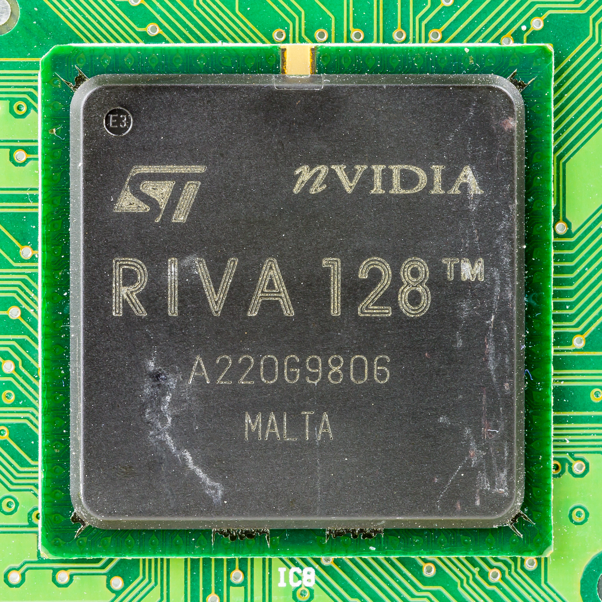
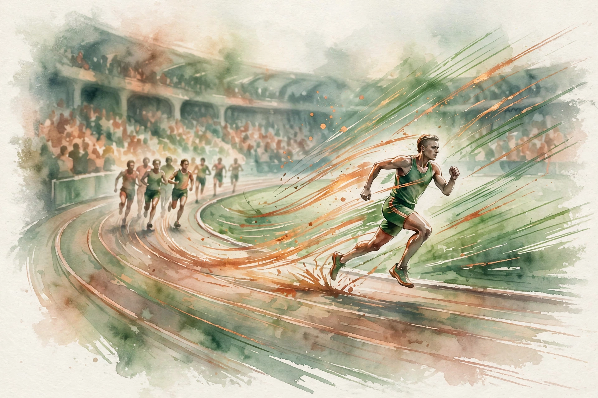

Acquired · Episode 9 · Companion
NVIDIA Part I: The GPU Company
The origin story. Three founders, a $2 million seed at a $6 million valuation, two brushes with death, and the six-month ship cadence that killed 90 competitors. This companion follows the episode chapter by chapter, 1993 to 2006.

Illustration. The Denny's pitch: 3D graphics for everyone, over coffee. AI-generated watercolor.
Listen. The official Acquired episode audio (about 2 hr 20 min). Times below are proportional estimates from the transcript, which carries no timestamps.
The Wisdom Index: every nugget in this companion
Source fact A claim from the episode transcript. Interpretation My read on what it means. Times marked ~ are proportional estimates from word position, since the transcript has no timestamps.
~00:02
Jensen's Beginning
My will to survive exceeds almost everybody else's will to kill me.
Jensen Huang, as quoted on the episode (~00:02). His own summary of 1993-2006.
Source fact The story starts in the southern part of Taiwan, with the birth of Jen-Hsun Huang in February 1963, later Americanized to Jensen. He graduates in 1984 and joins AMD as the equivalent of a chip-design product manager, engineering-heavy junior management on a blazing-fast-for-the-time 1 MHz CPU chip. After a couple of years he follows his office to a startup called LSI Logic, which had just gone public in what was then the largest venture return in IPO history: Sequoia's Don Valentine made $153 million on day one.
LSI was one of the first ASIC companies, custom-designed chips built for other companies. Jensen spent eight years there while finishing his master's at Stanford, completed around Thanksgiving 1992. Two colleagues from Sun Microsystems, Chris Malachowski and Curtis Priem, in Jensen's words "really, really fantastic engineers," were unhappy and had an idea.
Nugget 1 · Founders
The will to survive
What happened. Jensen's own summary of the founding years: his will to survive exceeds almost everybody else's will to kill him. Two near-deaths followed. He was right to lead with it.
Why it matters. Strategy only compounds if the company survives to use it. The quote is the operating system under everything else in this episode.
The principle. Survive first, then compound, then control. In that order.
~00:24
The Idea: 3D Graphics for Everyone
Source fact Late 1992. 3D graphics turn mainstream. The way it works: you need SGI workstations, expensive machines from Silicon Graphics down the street. Jurassic Park is about to come out. Meanwhile, kids on PCs play Wolfenstein 3D, and Doom comes out in 1993 from id Software in Texas, where John Carmack does incredible engineering feats to get 3D running on consumer PCs. The market loves it.
Chris and Curtis's idea: make 3D graphics cheap and ubiquitous, not locked in workstations. They pitch Jensen over dinner at Denny's, his favorite spot. He worked at one in high school. His go-to dish is the Superbird. He joins them. They found NVIDIA in 1993.
Nugget 2 · Founding
The Superbird pitch
What happened. Two frustrated Sun engineers pitched Jensen at Denny's over his usual Superbird. The thesis: 3D graphics should be cheap and ubiquitous, not locked in workstations.
Why it matters. The founding insight was a distribution insight, not a chip insight. The technology existed. The price did not.
The principle. Look for the capability trapped in the expensive tier. Your pitch is the price cut.
~00:34
The $2M Seed
Source fact Sequoia and Sutter Hill invest, about $1 million each, $2 million total, at a $6 million post-money valuation. Between the seed and the IPO, they raise only about $20 million total. There were no stages of venture capital then. You raised venture money and then hopefully were profitable enough to go public.
Nugget 3 · Fundraising
Two million at six million
What happened. NVIDIA raised $2 million at a $6 million post-money valuation, then only about $20 million more before the IPO. The IPO priced at a $600 million market cap: a 100x return from the seed valuation.
Why it matters. Capital efficiency forced the discipline. With no mega-rounds, the company had to ship its way out of every crisis.
The principle. Raise little, ship much. Scarcity is a strategy when the market is crowded.
~00:39
Death #1: The Quadrilateral Bet

Illustration. The wrong primitive: quadrilaterals versus the industry's triangles. AI-generated watercolor.
Source fact NVIDIA's first chip bets on quadrilaterals as the fundamental 3D primitive. The industry standardizes on triangles instead: a triangle is the fewest vertices in a closed shape, the cheapest way to describe a surface. NVIDIA is on board with Microsoft's ecosystem, which standardizes on the triangle paradigm. Sega, their one big customer, gets cold feet about quadrilaterals too, and in 1996 says they switch horses.
Meanwhile, memory prices drop thanks to Moore's law. NVIDIA's chips were designed to be super tight on memory: memory cost about $200 in components per chip, while competitors with more generous memory designs paid about $50. Everything goes wrong at once: wrong primitive, wrong memory economics, one customer walking away.
Then the turn. Jensen sits down with Curtis and Chris and tells them the pipe dream is over. The only shot is to standardize on the same Microsoft Direct3D as everyone else and compete on performance. Intellectual honesty, later the cornerstone of NVIDIA's culture, starts here: throw it all out.
Nugget 4 · Standards
Triangles beat quadrilaterals
What happened. NVIDIA bet on the cleverer primitive and lost. The industry picked triangles. NVIDIA swallowed its pride, standardized on Microsoft's Direct3D, and competed on raw performance instead.
Why it matters. The cleverer technology loses to the standard more often than the reverse. The episode notes the homage in NVIDIA's own headquarters, built from triangles, not quadrilaterals.
The principle. Bet on the industry's primitive, not your own cleverer one. Differentiate on performance, not on the standard.
Nugget 9 · Language
Our perspective is that
What happened. Jensen avoids the word vision. He calls it exclusionary: it implies one person's picture everyone else must follow. His phrasing: "our perspective is that we want to enable graphics as a new medium to tell stories."
Why it matters. Language assigns ownership. "Vision" makes the mission the founder's. "Our perspective" makes it the team's.
The principle. State the mission as shared perspective, not founder prophecy. People build what they co-own.
~00:54
The Riva 128: Nine Months or Death

Photo. The Riva 128, the bet-the-company chip designed in nine months. Source: Wikimedia Commons, CC BY-SA 4.0.
Source fact With Sega gone and cash running out, NVIDIA designs the Riva 128 in nine months. The tradeoff: they debug in software on an emulator running about one frame every 30 seconds, mind-numbing testing slowness in exchange for shipping at all. It works. The Riva 128 is a beast. Competitors need 18-24 months to ship their next generation. NVIDIA ships in six. They sell 1 million units of the Riva 128 within four months, in 1997.
Nugget 5 · Survival
One frame every 30 seconds
What happened. To ship in nine months, NVIDIA debugged on an emulator running one frame every 30 seconds. Normal monitors refresh 30 to 60 times a second. The tradeoff bought the only path with nonzero survival odds.
Why it matters. When the alternative is certain death, the "reckless" schedule is the rational one. Rationality is relative to the options.
The principle. When all options are bad, pick the one that can work. Measure the schedule against death, not comfort.
~01:02
The Six-Month Cadence

Illustration. The six-month cadence: lap the field by shipping. AI-generated watercolor.
Source fact Starting in 1997-1998, NVIDIA doubles the performance delivered at a given price point every six months. Compare: Moore's law says transistors double every 18-24 months. Competitors ship new architectures on that timeline. The episode's framing: NVIDIA competes on a different vector than the CPU manufacturers, and the thing it learns to do, execute more instructions simultaneously, parallelize, turns out to have uses far beyond graphics.
Toy: the cadence compounder
NVIDIA doubles performance-per-dollar every 6 months while rivals need 24. Set the cycle times and see the gap after 4 years. Illustrative model.
Nugget 6 · Speed
Speed is the strategy
What happened. Doubling performance-per-dollar every six months against 24-month rivals compounds to roughly 64x ahead in four years. Competitors designed against NVIDIA's last chip while it shipped the next two.
Why it matters. Speed was not an advantage. It was the entire strategy. Each cycle compounds the last.
The principle. Convert "ship faster" from slogan to math. Then find the organizational muscles that make the cycle possible.
~01:08
Inventing the GPU
Source fact In 1999 NVIDIA rebrands its products. After the NV1 and Riva 128, they run a naming contest. The winner is "Geometry Force", "force" as in the Star Wars line may the force be with you, shortened to GeForce, still the gaming brand today. The first GeForce, the GeForce 256, delivers 5x better graphics performance than anything else on the market. And they coin the category: before this, these were "graphics cards" or "graphics chips." NVIDIA markets the GeForce 256 as the first GPU, the Graphics Processing Unit. Whoever names the category sets the buying criteria, and the criteria always favor the namer.
Nugget 7 · Positioning
Name the category
What happened. A naming contest produced GeForce. Then NVIDIA coined "GPU" and defined the category. Before it, buyers compared graphics cards on specs. After it, NVIDIA set the terms.
Why it matters. Categories are mental real estate. The name smuggles in buying criteria that favor the namer. Free, permanent positioning.
The principle. Define the category your product creates in one paragraph. If you cannot, you do not own it.
~01:12
The IPO and the Xbox Deal
Source fact NVIDIA goes public at the beginning of 1999 at a $600 million market cap, a 100x return from the $6 million seed valuation. Then Microsoft comes calling with a secret project: the Xbox. NVIDIA signs a $500-million-a-year deal to supply the graphics, with a $200 million advance. The chip is a modified version of the new GeForce 3, the first with programmable shaders and programmable lighting on the GPU: instead of fixed-function hardware spitting out triangles, developers run little programs, shaders, on the chip.
The master-strategist move: the Xbox deal buys Microsoft's support for programmable shaders, which protects NVIDIA from Intel. But Microsoft extracts its pound of flesh: console is a crappy, low-gross-margin business. Of all the game consoles in history, NVIDIA powered exactly three consoles: the original Xbox, the PlayStation 3, and the Nintendo Switch. When the Xbox 360 generation arrives, NVIDIA loses it to ATI, and a huge chunk of topline revenue walks out the door.
The revenue rocket and the plateau
Revenue in millions of dollars. Hover for detail.
Source: Acquired, NVIDIA Part I, ~01:42. The fastest semiconductor company ever to $1B.
Nugget 8 · Partnerships
Revenue is vanity
What happened. The $500-million-a-year Xbox deal carried terrible gross margin, and Microsoft held all the bargaining power at renewal. NVIDIA lost the 360 to ATI. Only three consoles ever carried NVIDIA chips, by discipline, not accident.
Why it matters. Revenue that a partner can take away rents you. Revenue with margin and control builds you. NVIDIA walked away rather than bid down.
The principle. Run the Xbox test on any deal with a giant: margin, renewal power, walk-away price. Answer before the first meeting.
~01:42
The Revenue Rocket and the Plateau
Source fact Fiscal year ending January 31, 1999: $158 million in revenue. Next year: $375 million. Then $735 million. Then, in calendar 2001, the Xbox year: about $1.4 billion, the fastest semiconductor company ever to reach a billion in revenue, and an S&P 500 addition in the company's ninth year. Then the plateau: revenue sits near $2 billion, flat for a few years. $2.8 billion by 2005, barely profitable, net income a couple hundred million or less each year, not adding meaningfully to the cash pile. Competitors figure out programmable shaders. In 2006, AMD buys ATI.
Pricing power, built not granted
Gross margin. Hover for detail.
Source: Acquired, NVIDIA Part I, ~01:42. The moat was still being built.
Nugget 11 · S-curves
Reloading, not dying
What happened. Revenue flatlined near $2 billion while the company funded the next S-curve underneath: scientific computing, the CUDA bet. Flat revenue plus heavy investment reads as stagnation.
Why it matters. The market could not tell reloading from dying. That is why the stock lagged for a decade. The leading indicators were capability, not revenue.
The principle. Distinguish reloading from dying by checking whether the next S-curve is funded. Revenue lags capability by years.
~01:52
2006: Shoot to Kill
Ninety to two
Graphics chip competitors, 1993 to 2006. Hover for detail.
Source: Acquired, NVIDIA Part I, ~00:02. Proliferation, then consolidation.
Source fact Forbes runs a cover story called "Shoot to Kill." AMD moves on NVIDIA. With revenue flat and the machine-learning and scientific-computing markets invisible, the bear case says this company needs adult supervision, maybe an acquirer. The bull case, which Jensen holds alone: bet the farm on scientific computing, parallel compute for researchers. It turns out to be so much more than scientific computing. That bull case is the next episode.
Nugget 10 · Consolidation
Ninety to two
What happened. Ninety undifferentiated graphics startups in 1993. Two survivors by 2006: venture-backed NVIDIA and bootstrapped Canadian outsider ATI. The Buffett pattern: proliferation, then consolidation.
Why it matters. Consolidation rewards the already-winning. David's investing rule: pay up for the winner rather than buy the laggard cheap.
The principle. In a consolidating commodity market, back the one running away with it. Cheap laggards stay cheap.
The episode in seven lines
- Survive first, then compound, then control. In that order.
- Bet on the industry's primitive, not your own cleverer one.
- When all options are bad, pick the one that can work.
- Speed is the strategy. Ship every six months while rivals ship every two years.
- Name the category. Whoever names it owns it.
- Revenue is vanity. Margin and control are sanity.
- Flat revenue can mean reloading. Check whether the next S-curve is funded.
Distilled from Acquired, NVIDIA Part I, March 2022. Full episode: youtube.com/watch?v=wYUTMgGxZzc. Times are proportional estimates from the transcript.
~02:15
Outro
Source fact The episode closes with the sign-off, who got the truth, and the hosts' takeaways from the first act of the NVIDIA story.